Locket · 克制的相机
单张照片、大圆角取景框、白色图标、少量黄色强调。值得借鉴的是操作聚焦和桌面照片入口。
13 张官方 iPhone 宣传截图 · 2 张来源页截屏
界面观察与设计建议已分开；未安装竞品实机验证。
左两张 Locket / 右两张 Yope · 点击图片查看完整原图
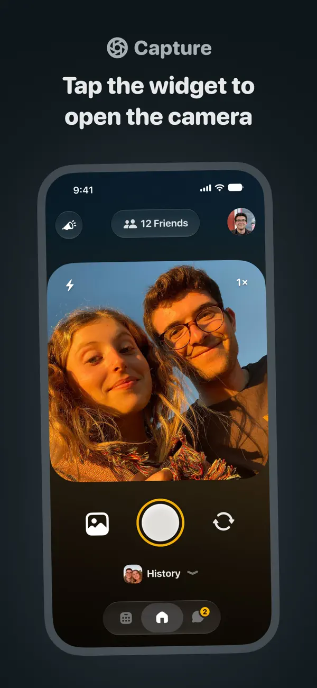
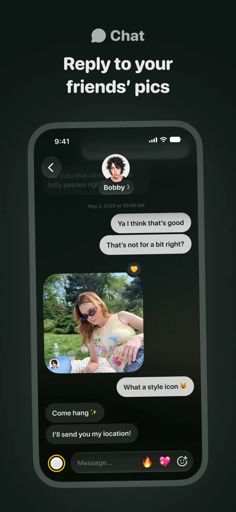
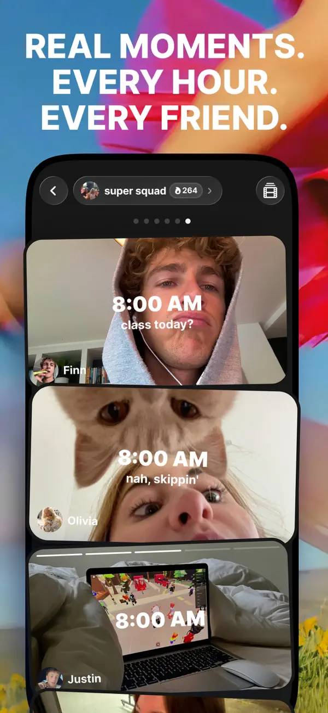
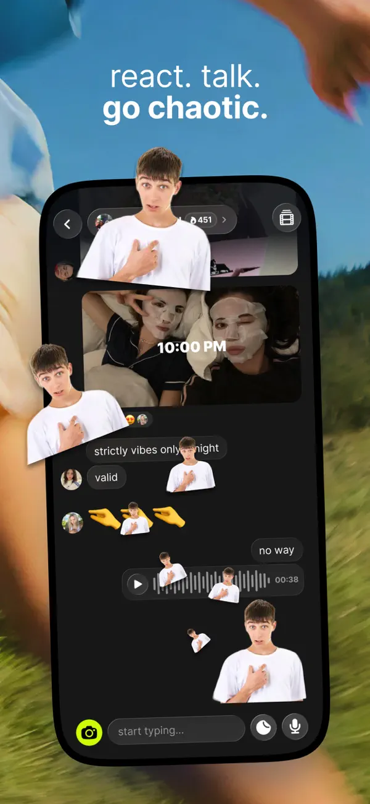
单张照片、大圆角取景框、白色图标、少量黄色强调。值得借鉴的是操作聚焦和桌面照片入口。
小组胶囊、堆叠照片、时间叠字、贴纸与拼贴。值得借鉴的是小队身份与视觉回应的连续性。
官方商店轮播顺序 / iPhone 宣传素材
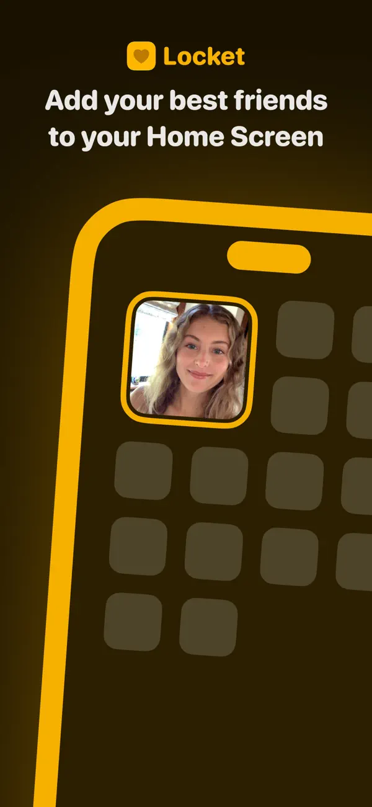
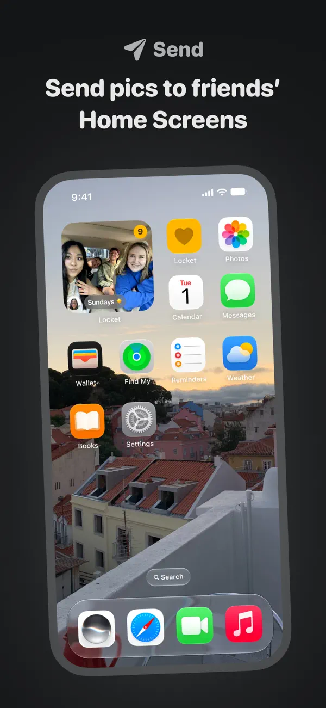
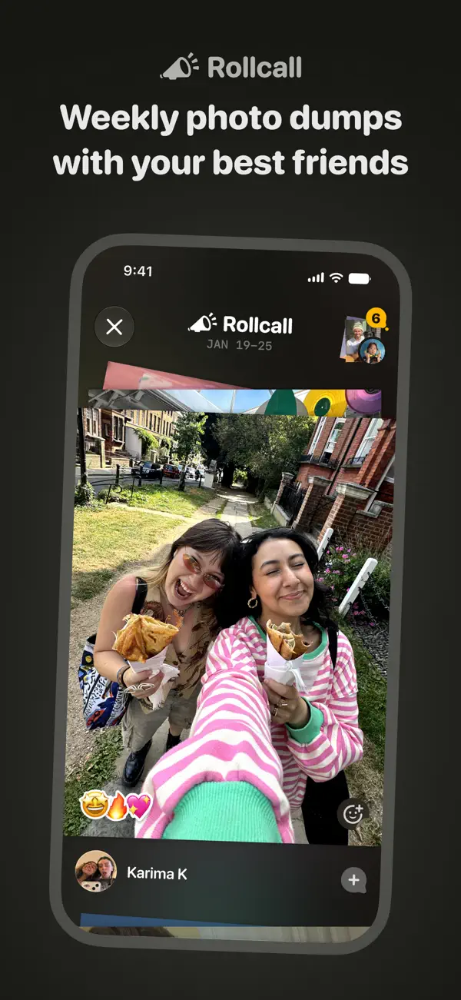
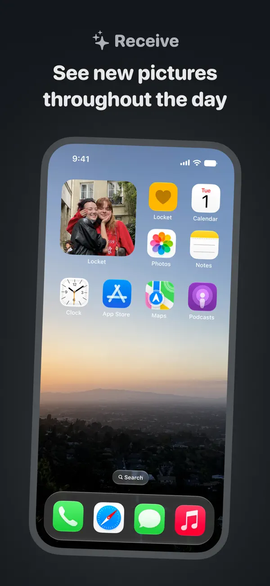
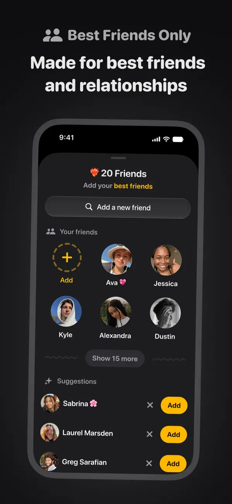
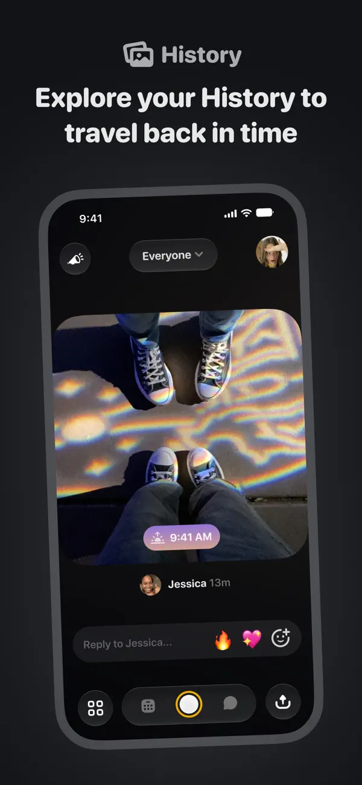
官方商店轮播顺序 / iPhone 宣传素材
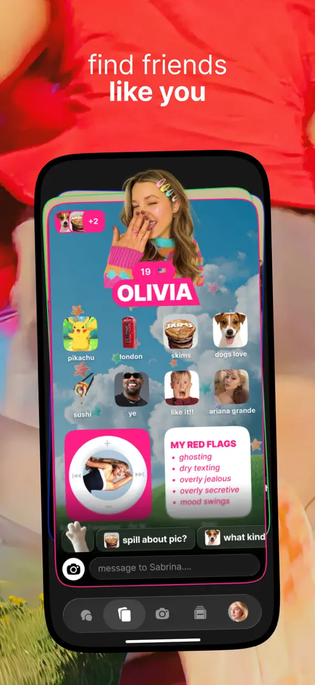
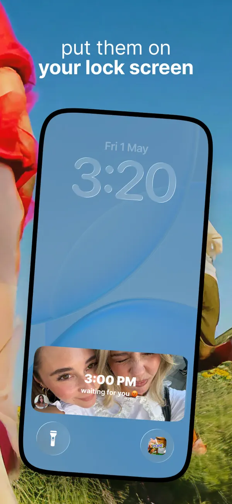
保留现有橙色 Token 与四 Tab。拍摄页学习 Locket 的焦点，小队页学习 Yope 的照片连续性；回顾可以活泼，授权和受众必须清楚。宣传图外层的大标题、倾斜手机和出框贴纸，不等同于客户端固定布局。
保留官方商店上下文 / 网页样式不属于客户端 UI
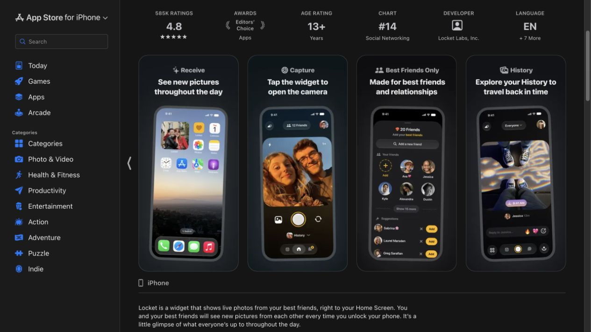
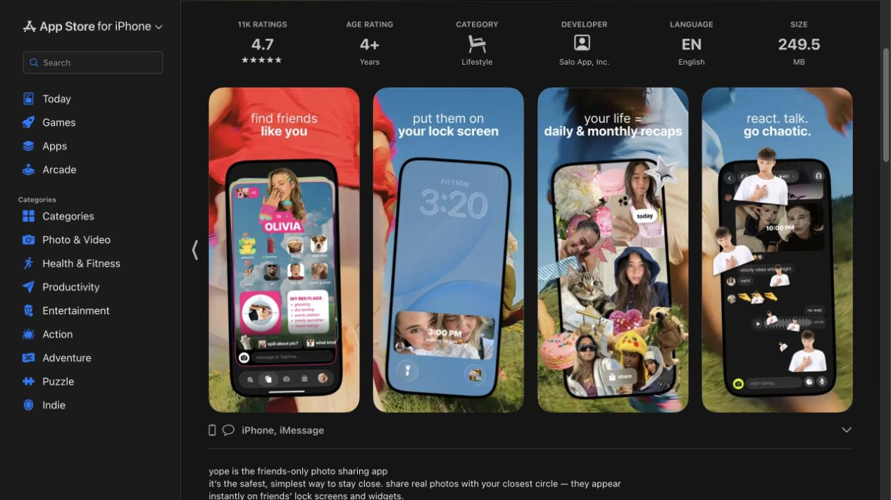